Part 1: Randomly Sampled Texture
First, I fill the output image with randomly sampled patches from the texture image. Here is the result.

 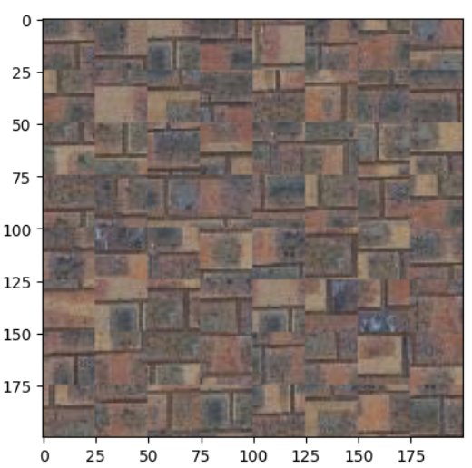
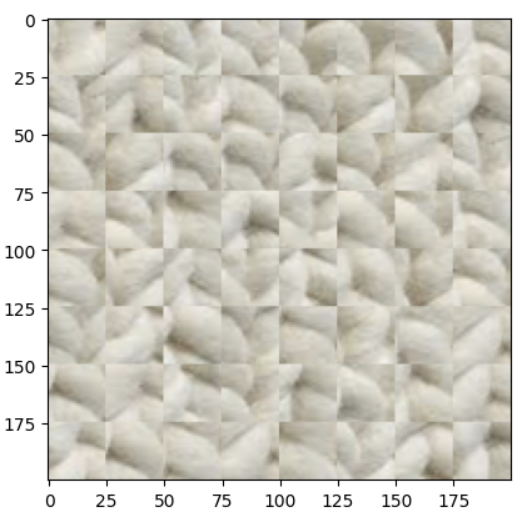
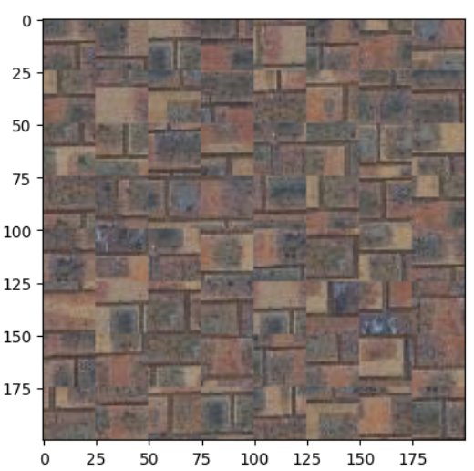
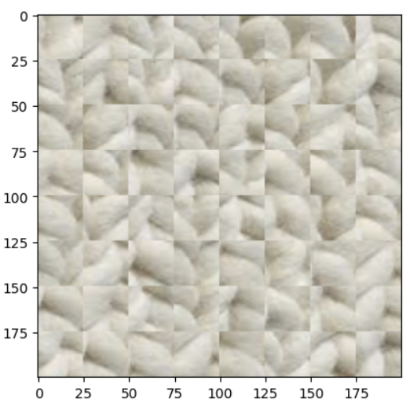
The parameters: patch_size = 25, out_size = 200
First, I fill the output image with randomly sampled patches from the texture image. Here is the result.
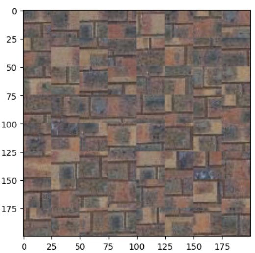
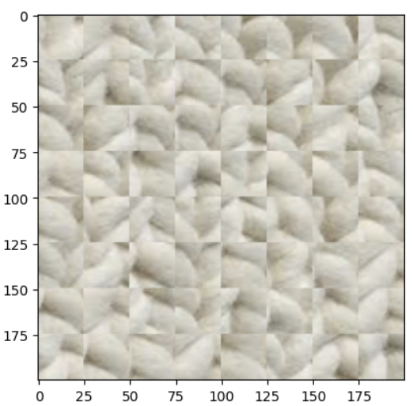
The parameters: patch_size = 25, out_size = 200
Then, to improve the quality of result, I search for the best patch with low overlapping errors with a tolerance of 5. The result is shown below:
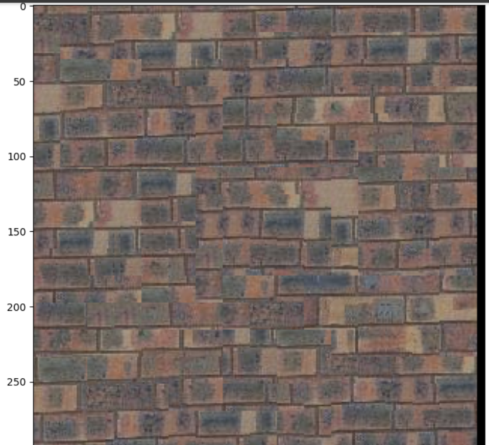 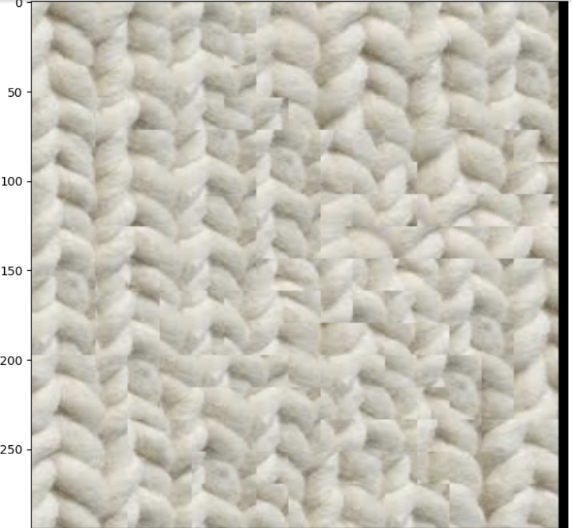The parameters: patch_size = 25, overlap = 7, tolerance = 5
Then, I implemented a more complicated image quilting, which is cutting patches to better fit them. The result is shown below:
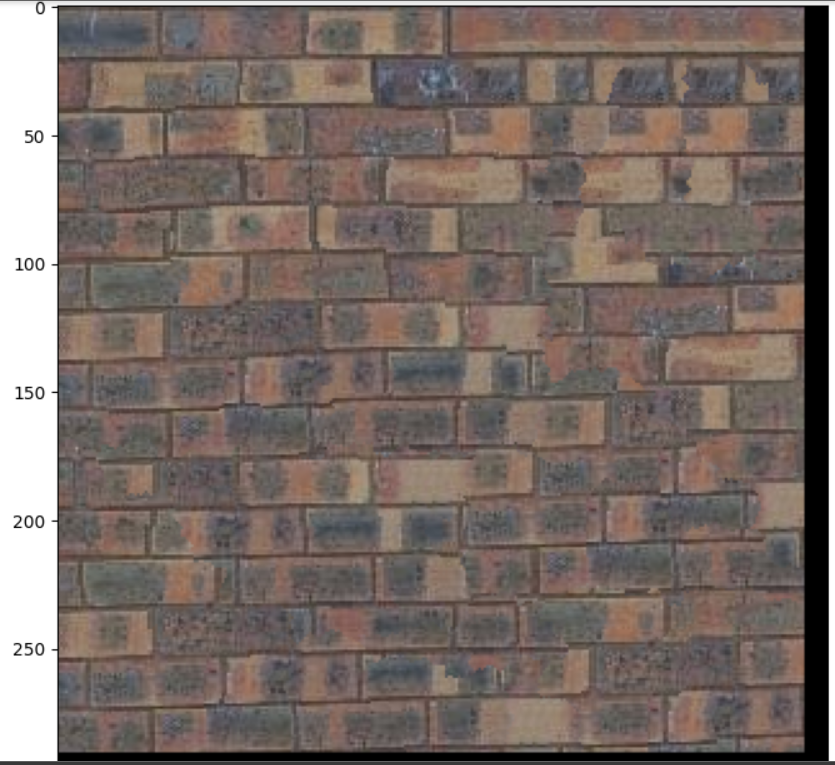 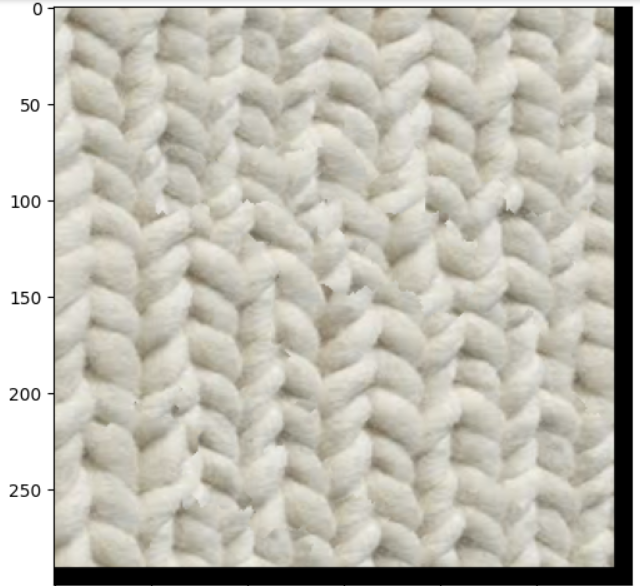Here are two patches that are being cut, one from the template 1, the other from the selected:
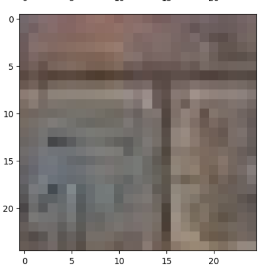 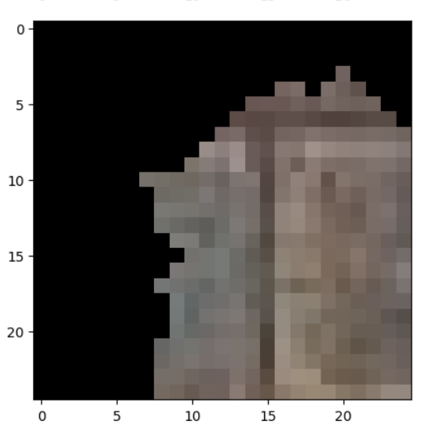 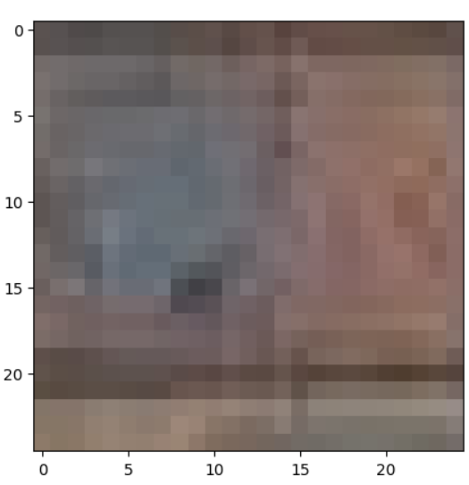 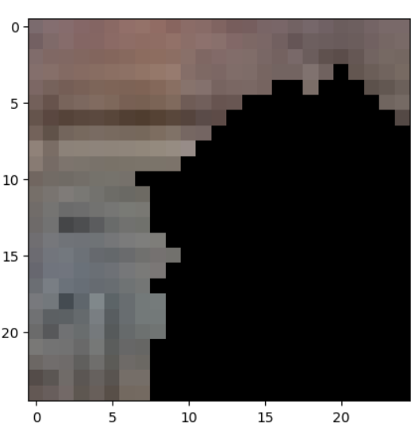To get the binary mask, SSD errors are calculated, shown below:
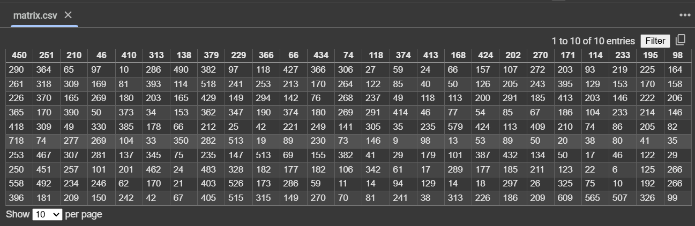And there are three masks, horizontal mask, vertical mask, and combination mask (yellow repesents 1 and purple repesents 0):
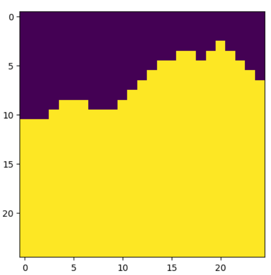 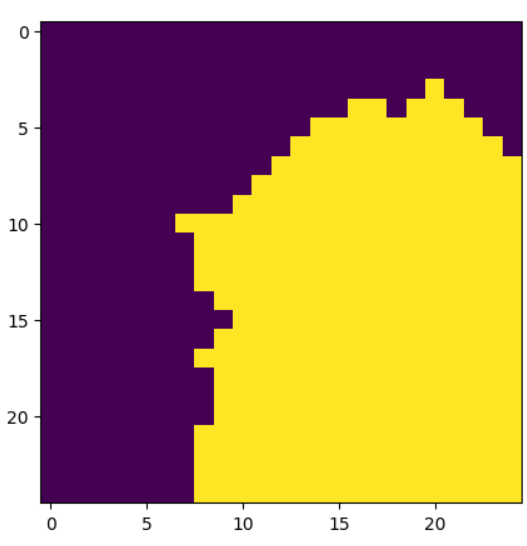Additional quilting results are shown below:
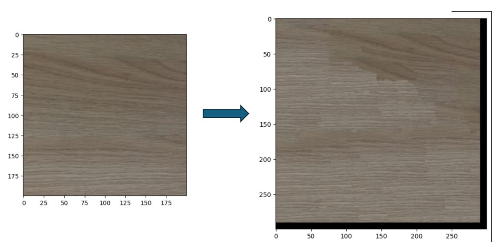 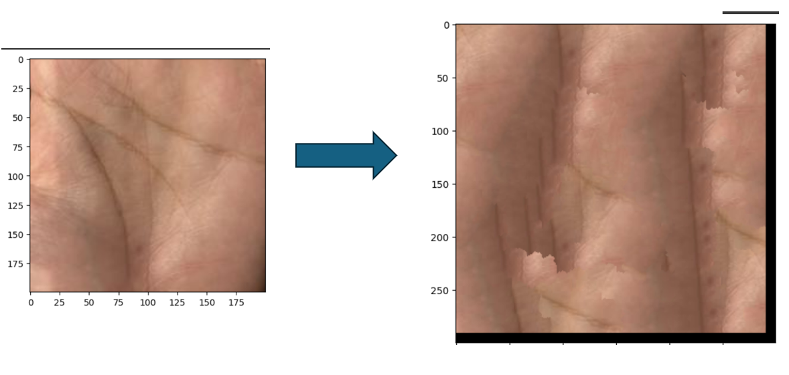Texture transfer is a computer graphics technique that combines the texture of one image (source) with the structure or layout of another (target). The goal is to synthesize a new image that maintains the visual characteristics of the source texture while conforming to the design or features of the target. This is achieved by balancing two constraints: preserving texture authenticity and respecting the target's structural details.
The process involves dividing the source texture into small, overlapping patches and arranging them to construct the output image. Patch-based synthesis ensures texture consistency and minimizes artifacts. Overlapping regions between patches are blended using techniques like minimal error boundary cuts, resulting in smooth transitions and a seamless appearance.
To guide patch selection, an error metric evaluates both texture and guidance alignment. The texture matching error ensures patches resemble the source texture, while the guidance matching error aligns patches with the target structure. A weighting factor (alpha) adjusts the influence of each constraint.
Applications of texture transfer include artistic rendering, style transfer, and gaming. It enables realistic textures to be applied to sketches, stylized designs, or virtual environments. By blending textures and structures, texture transfer is a versatile tool for creating visually striking and contextually relevant images.
The result is shown below:
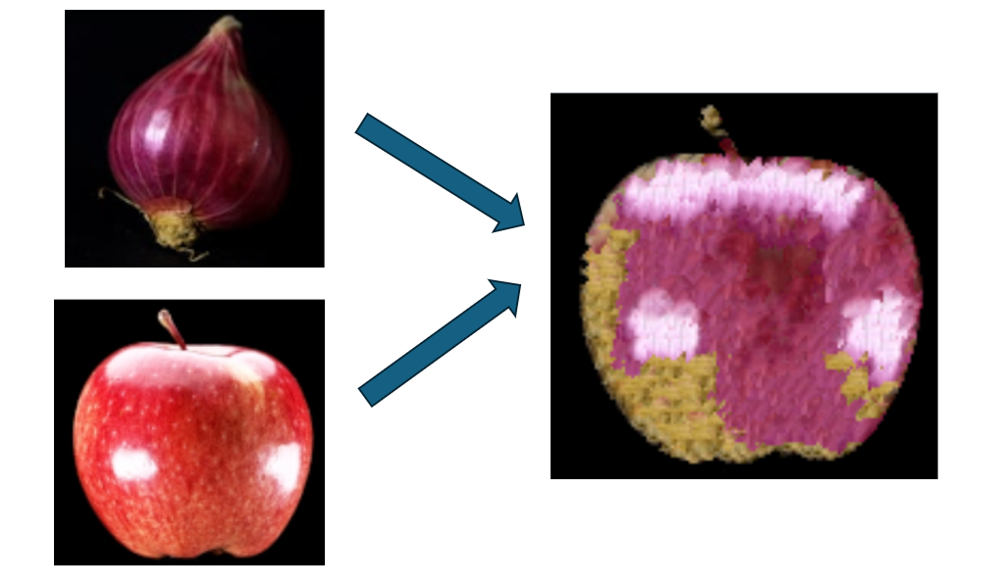 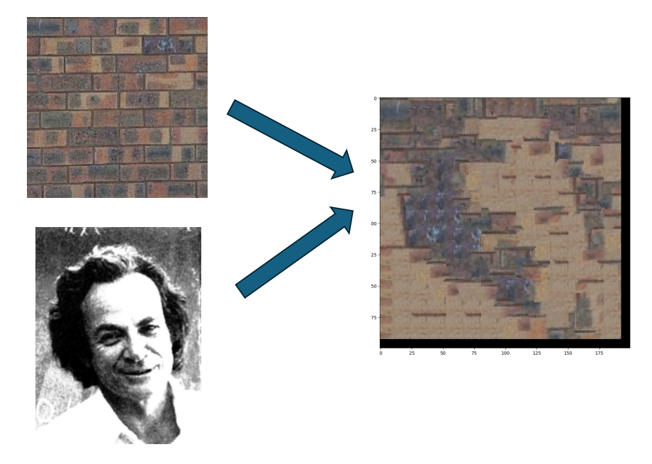